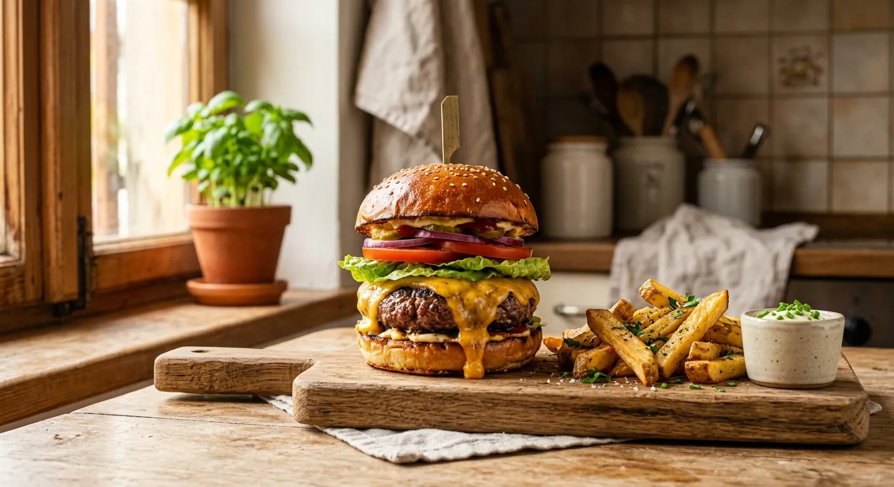
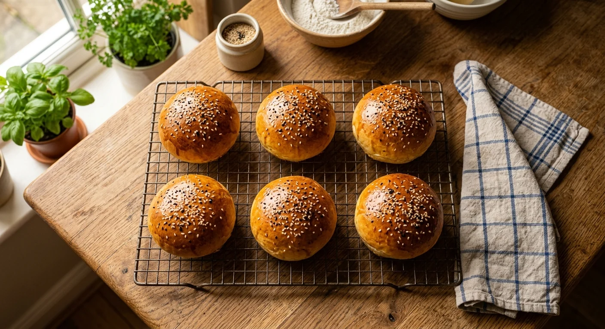
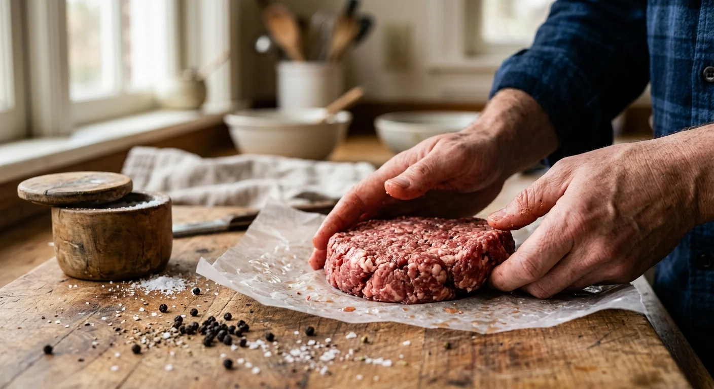
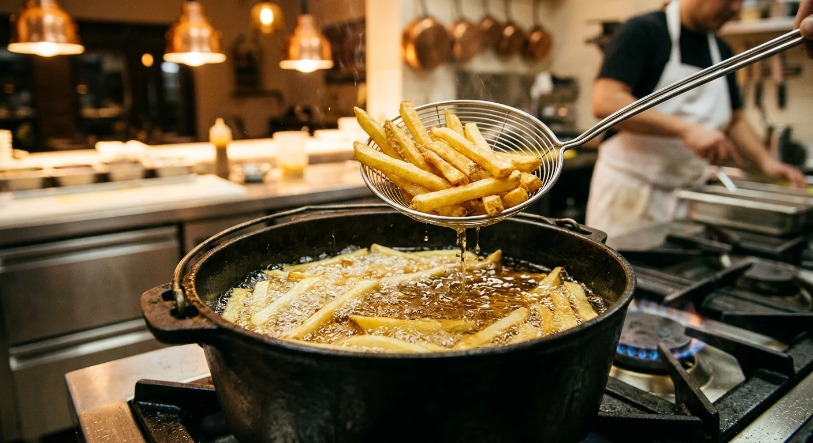
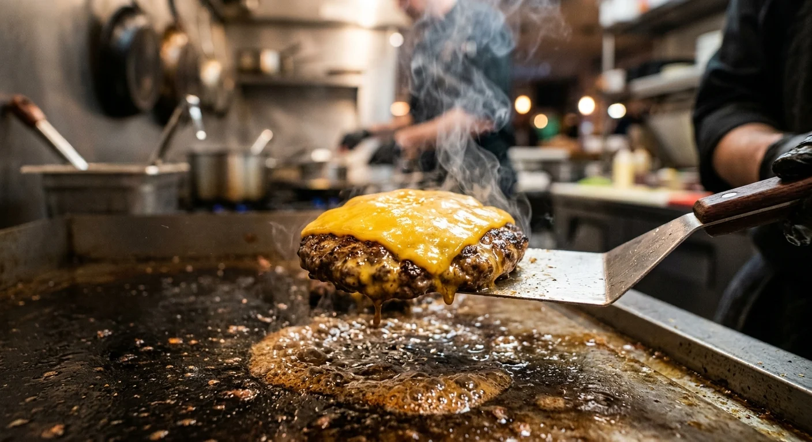

← Volver
🍔 Hamburguesa Épica desde Cero
Para preparar una hamburguesa deliciosa en casa debemos cuidar tres cosas: un pan suave, una carne jugosa y unas papas fritas bien crujientes. ¡Aquí aprenderás a preparar todo paso a paso! 🥖🥩🍟
🍽️
¿Cuántas porciones necesitas?
Las cantidades cambian automáticamente al tocar los botones.
💡 La receta base está calculada para 6 porciones.

🥖 1. El Pan Suave
Vamos a preparar un pan suave y esponjoso. La idea es conseguir un pan que aguante bien la carne, el queso y las salsas sin romperse. 😊
🧾 Ingredientes para 6 porciones:
- 500 g de harina de trigo.
- 10 g de levadura seca de panadería.
- 250 ml de leche tibia.
- 1 huevo.
- 50 g de mantequilla blanda.
- 30 g de azúcar.
- 10 g de sal.
- Para pintar: 1 huevo batido con un poco de leche y semillas de sésamo.
Pasos:
- Activar: En un bol pequeño, mezcla la leche tibia con la levadura y el azúcar. Déjalo reposar 10 minutos hasta que haga espuma en la superficie.
- Amasar: En un bol grande, pon la harina y la sal. Haz un hueco en el centro y añade la mezcla de levadura y el huevo. Mezcla hasta integrar. Pasa la masa a la mesa y amasa por 5 minutos.
- La mantequilla: Abre un poco la masa, integra la mantequilla blanda y sigue amasando unos 10 minutos más. Al principio será un desastre pegajoso, ¡no te rindas ni le pongas más harina! Sigue amasando hasta que quede lisa y elástica.
- Primer reposo: Pon la masa en un bol engrasado con un poco de aceite, tápala y déjala reposar 1 hora (o hasta que duplique su tamaño).
- Formar: Desgasifica la masa (aplástala un poco con los nudillos), divídela en 6 porciones iguales y haz bolitas perfectas. Ponlas en una bandeja de horno con papel encerado dejando espacio entre ellas.
- Segundo reposo y horneado: Tapa las bolitas y déjalas reposar otros 45 minutos. Luego, píntalas suavemente con la mezcla de huevo y espolvorea sésamo. Hornea a 200°C por 15-18 minutos hasta que estén dorados.

🥩 2. La Carne Jugosa
Una buena hamburguesa necesita carne con algo de grasa. La grasa ayuda a que la carne quede jugosa y tenga más sabor. 😋
🧾 Ingredientes para 6 porciones:
- 800 g de carne picada de res. El secreto: Pide un corte que tenga un 80% de carne magra y un 20% de grasa (aguja, huachalomo, o asado de tira). La grasa es lo que da la jugosidad y el sabor.
- Sal gruesa y pimienta negra recién molida.
Pasos:
- Formar sin amasar: Toma porciones de unos 130-150 g de carne picada. Con las manos mojadas en agua fría, forma los medallones muy suavemente, sin apretar ni compactar demasiado la carne. Si la compactas mucho, quedará dura al morder.
- El truco del pulgar: Haz una ligera hendidura con tu pulgar justo en el centro de cada medallón. Al cocinarse, la carne tiende a encogerse y abombarse en el centro; esta pequeña hendidura evita que tu hamburguesa termine pareciendo una pelota.
- Sazonar al final: NUNCA le pongas la sal a la carne cruda antes de formar los medallones (la sal extrae la humedad y te dejará una suela de zapato). Ponle abundante sal gruesa y pimienta justo un segundo antes de ponerla en la plancha.

🍟 3. Papas Fritas Crujientes
Para que las papas queden suaves por dentro y crujientes por fuera, vamos a cocinarlas dos veces. 🥔✨
Ingredientes:
- Papas grandes (variedad harinosa, ideal para freír).
- Abundante aceite vegetal.
- Sal.
Pasos:
- Cortar y lavar: Corta las papas en bastones parejos. Sumérgelas en un bol con agua muy fría por 30 minutos. Esto quita el exceso de almidón y evita que se quemen rápido en el aceite.
- Secar muy bien: Escúrrelas y sécalas perfectamente con un paño limpio. El agua y el aceite caliente son enemigos explosivos.
- Primera fritura (pochar): Calienta el aceite a fuego medio-bajo (unos 140°C). Fríe las papas por unos 6-8 minutos. Queremos que se cocinen y ablanden por dentro, pero que NO tomen color. Sácalas y escúrrelas en una rejilla. Déjalas enfriar al menos 15 minutos (incluso las puedes congelar en este punto).
- Segunda fritura (el crujiente): Sube el fuego a alto (unos 190°C). Vuelve a meter las papas por 3-4 minutos hasta que estén súper doradas y crujientes. Sácalas, escurre en rejilla (no en papel para que no suden) y échales sal inmediatamente mientras siguen hirviendo de calor para que se les pegue bien.

🧀 4. Preparar la Hamburguesa
- El tostado (Barrera de sabor): Corta tu pan brioche por la mitad, unta las caras internas con un poquito de mantequilla y tuéstalas en una sartén caliente. Esto crea una costra impermeable para que los jugos de la carne o las salsas no desarmen tu pan.
- La cocción: Pon la sartén o plancha a fuego muy fuerte hasta que humee ligeramente. Coloca la carne (previamente salpimentada por la cara de arriba). Cocina 3-4 minutos para crear una costra súper caramelizada (reacción de Maillard).
- El queso: Dale la vuelta a la carne, salpimienta la nueva cara hacia arriba y ponle inmediatamente 1 o 2 lonchas de queso (cheddar maduro, edam o queso americano) encima. Tapa la sartén 30 segundos; el vapor hará que el queso se funda derramándose perfectamente por los bordes.
- Montaje ideal: Base del pan tostado ➡️ Salsa de tu preferencia (¡una crema de ajo le queda brutal!) ➡️ Lechuga fresca para dar textura ➡️ Rodajas de tomate ➡️ La carne con el queso fundido ➡️ Tapa del pan.
